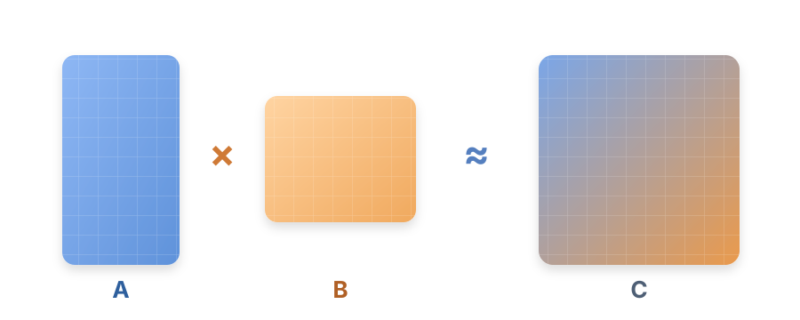
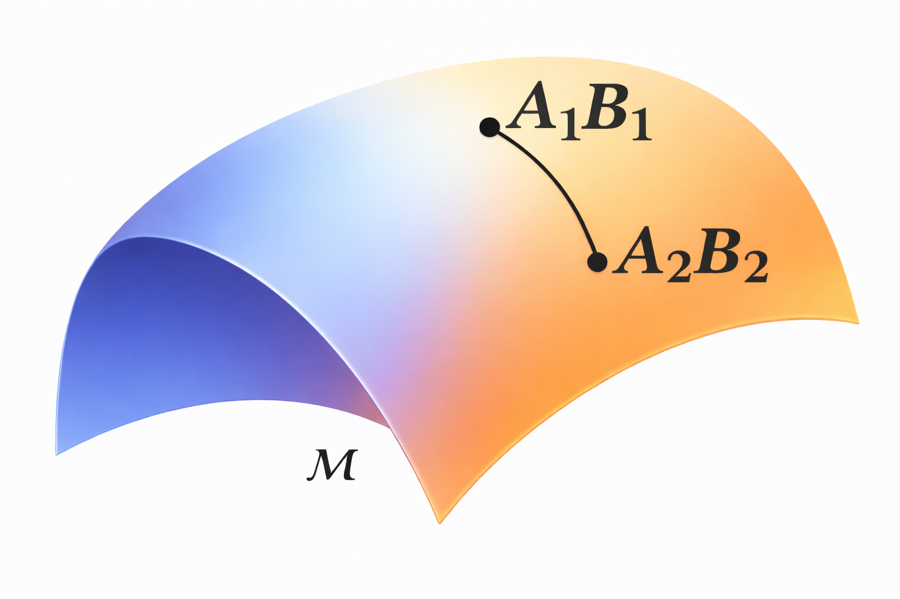
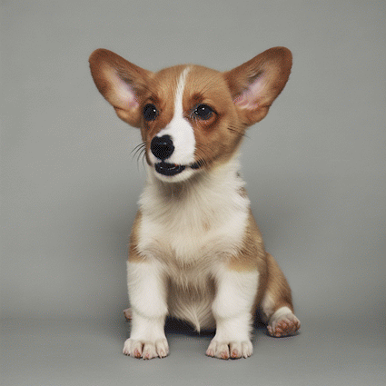
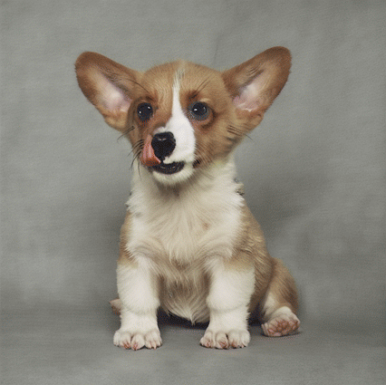
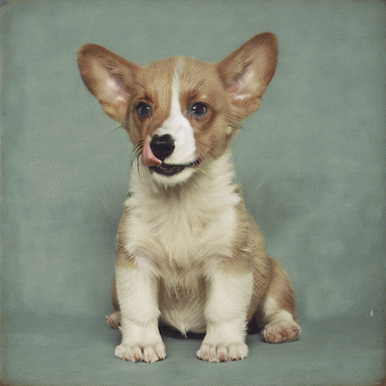
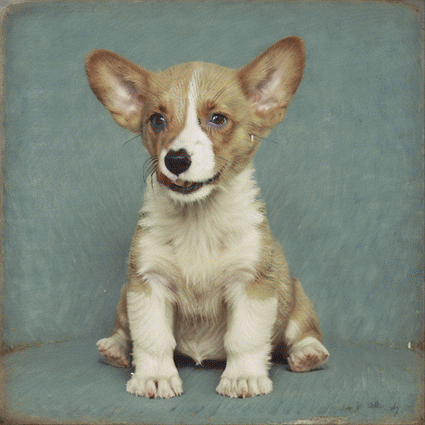
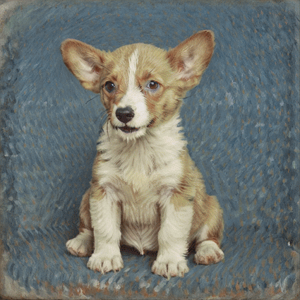
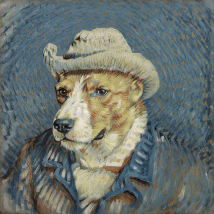
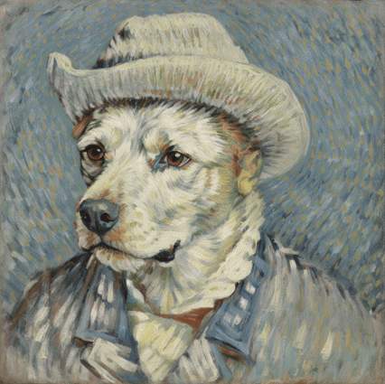
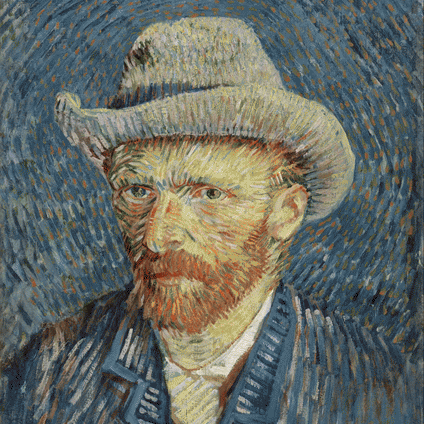

Матрица
Матрица — это таблица чисел с фиксированным числом строк и столбцов.
\(C = \begin{pmatrix} 3 & 1 & 4 & 1 \\ 5 & 9 & 2 & 6 \end{pmatrix}\)
Матричное умножение
Умножение матриц — важная операция линейной алгебры.
Где:
- \(A\) имеет размер \(m \times n\)
- \(B\) имеет размер \(n \times r\)
- \(C\) имеет размер \(m \times r\)
$$C = AB, \qquad C_{ij} = \sum_{k=1}^{n} A_{ik} B_{kj}$$
Задачи:$$\begin{pmatrix} 0 & 1 \\ 0 & 0 \end{pmatrix} \begin{pmatrix} 0 & 1 \\ 0 & 0 \end{pmatrix} = ? \qquad \begin{pmatrix} 1 & 0 \\ 0 & 1 \end{pmatrix} \begin{pmatrix} 1 & 2 \\ 3 & 4 \end{pmatrix} = ?$$
Матричное разложение
Теперь, наоборот, будем искать компактное разложение заранее заданной матрицы \(C\):
\(AB = C, \quad A\colon m \times r, \quad B\colon r \times n, \)
где \(r \ll m, n\) — число, которое мы выбираем так, чтобы уменьшить число параметров и ускорить вычисления.
Минимально возможное \(r\) — это ранг матрицы. Если взять меньше, часть данных потеряется, зато уменьшится число параметров.

Изменяя число \( r \), можно управлять степенью сжатия изображения: при увеличении \( r \) картинка постепенно восстанавливает мелкие детали:
r
Матрицы в нейросетях
Нейросети — сложная функция от набора матриц (гигабайты параметров). Их обучение — сложный и долгий процесс.
Дообучение нейросетей — вместо полного изменения параметров нейросети - добавки (адаптеры) с малым числом параметров. Мы уже знакомы с этой структурой:
$$W' = W + AB$$
Здесь \(W\) — уже обученные параметры модели, а \(A\) и \(B\) — небольшие матрицы, которые донастраиваются под новую задачу. Это экономит память, время обучения и вычислительные ресурсы.
Геометрия произведения матриц
Для более эффективного дообучения моделей можно использовать геометрические подходы. Множество всех матриц с фиксированным рангом \(r\) образуют гладкое многообразие, которое можно использовать при дообучении.

Примеры многообразий:
Сфера
Тор
Dog — van Gogh
Имея два адаптера (собачка и ван Гог) и прокладывая между ними путь по многообразию, получаем третий - который умеет и то, и другое.
Благодаря структуре многообразия мы можем проложить кратчайший путь между двумя адаптерами, балансируя между стилем и собачкой.







